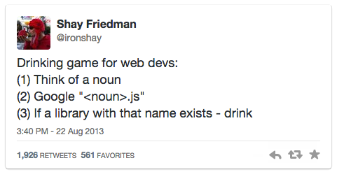
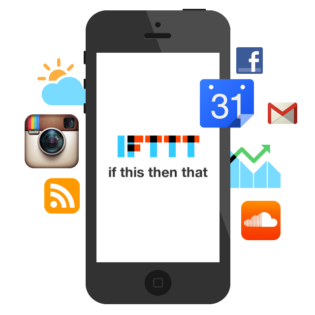

The web is an extremly rapidly evolving universe

Follow these simple steps
- Follow cool people
- Find the best sources
- Attend conferences
- Get your own sources
- Backup your knowledge
-
-
-
-
-
-
-
Who is the author of "whatever I use"?
Google it.
Follow them.
Addy Osmani
These days I find myself heavily relying on Twitter lists and G+ circles to keep up to date with what's happening on the front-end.
Alex Sexton
The only way that I've found that I'm able to stay up to date is by creating... When I want to learn something, I'll just start a project with it, and along the way I'll figure out the other tools I need to be successful.
Cody Lindley
As part of my daily activities, I spend 20 to 30 minutes reviewing twitter and RSS feeds... From time to time I pick a coding, or writing, project and focus all of my spare time in this area. When I'm feeling burnt out I'll attend a conference so that I can be inspired by ideas and people. And when I am really bored I start looking into practices that cross over into my area of expertise.
Put the Internet to work for you

Play, fail, succeed, share, repeat.